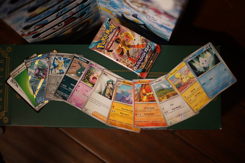
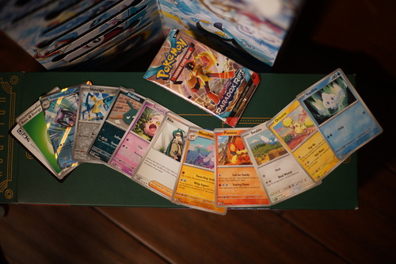

This is my haiku
It's about bunny rabbits
I love them so much
Ryan would like me to note that he took 5 seconds to write this.

My photo today is of the Christmas lights in Pioneer Square, Seattle. If you are curious why the right half looks lit and the left half doesn't, please check out pulse width modulation! Both sides were lit at equal brightness, but the duty cycles between the two sides are offset. My shutter speed (1/500) was fast enough to catch it, but eyes can't.
 

A Paradox Rift booster pack. Very cute Vanillite today! Can't wait to get this bad boy graded~